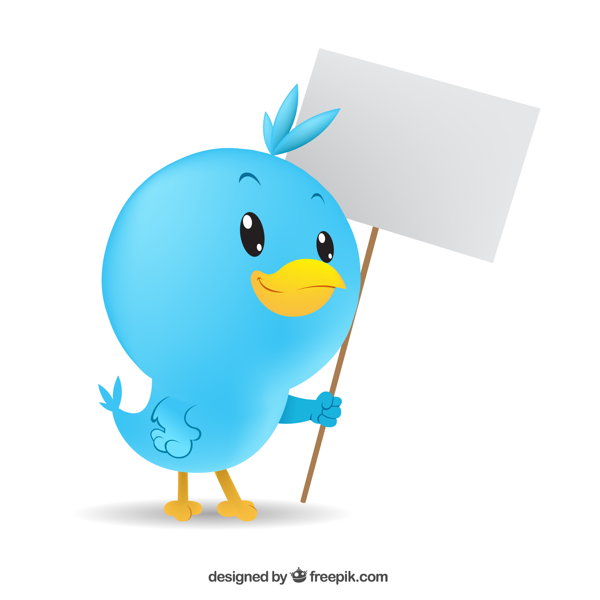

Un monde juste, durable et décentralisé est possible ! Découvrez notre manifeste pour un écosocialisme basé sur la cryptomonnaie, les solutions décentralisées et les fédérations sectorielles en démocratie directe.
 Acheter sur KDPCryptomonnaie écologique
Solutions décentralisées
Démocratie directe